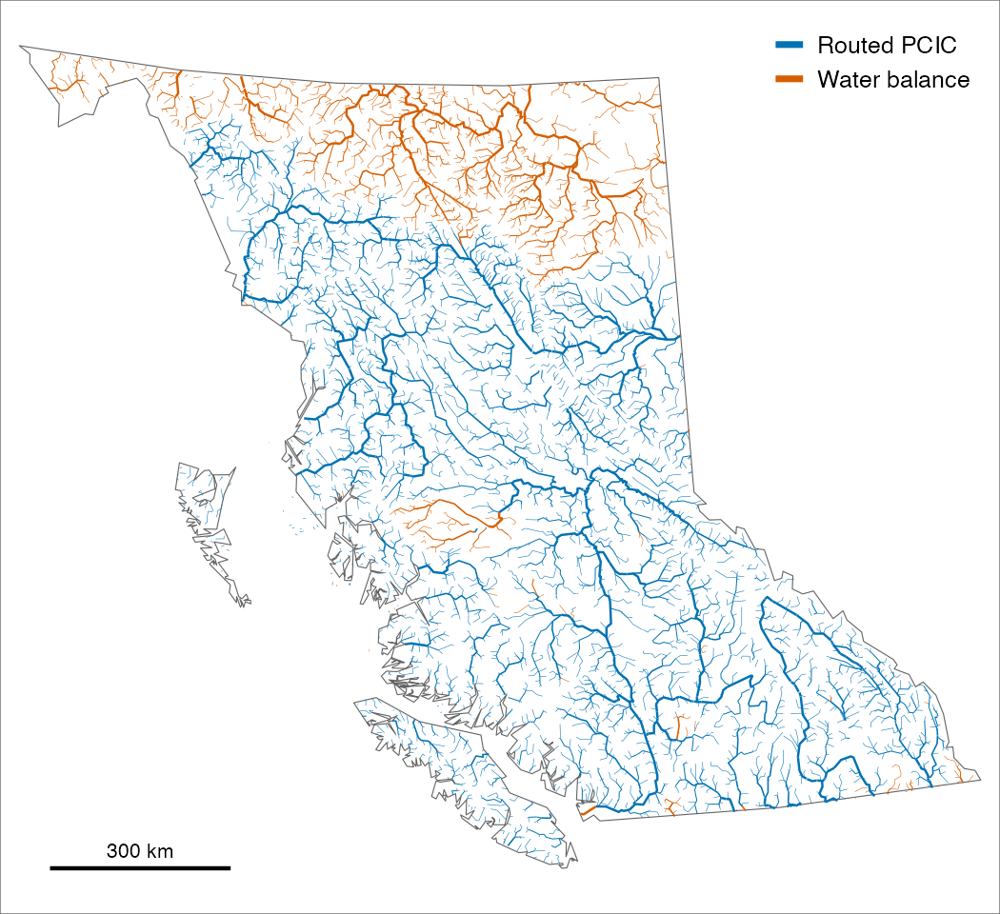

Stream flow and water temperature for BC’s Freshwater Atlas
wet estimates how much water flows in almost every stream in British Columbia, as a long-term average for each month from models, and publishes it openly. It also tracks flow and water temperature at hydrometric stations in the seasons that matter to fish, filling gaps in temperature records from air temperature. Habitat models use the flow to rate where fish can spawn and rear, and the station records show how this year compares with normal when planning or monitoring restoration.

Where each larger river’s default flow comes from. Most take it from the Pacific Climate Impacts Consortium’s routed model (blue); wet’s own water balance (orange) fills in where that model does not reach or reads far too low.
Installation
pak::pak("NewGraphEnvironment/wet")wet is under active development and its functions change between releases (see NEWS). Pin a release for reproducible work: pak::pak("NewGraphEnvironment/wet@vX.Y.Z").
Reading the published flow needs only duckdb. Station water temperature also needs tidyhydat, station flow a HYDAT database (tidyhydat::download_hydat()), and building the flow the Freshwater Atlas in PostgreSQL through fwapg.
Example
Monthly flow (m³/s) on the Bulkley River at Quick from both sources; month 0 is the year:
library(wet)
q <- wet_segment_monthly(NULL, 17057325, groups = "BULK")
xtabs(round(q_m3s) ~ source + month, q)
#> month
#> source 0 1 2 3 4 5 6 7 8 9 10 11 12
#> pcic_routed 118 32 24 20 55 221 299 250 182 118 95 71 46
#> wet_balance 118 45 50 48 86 220 303 203 109 106 98 87 62Learn more
- Stream Discharge per Segment: what the published yearly, monthly and daily flow is, which source to use, how to read it, a year at three Bulkley gauges, and how well each source matches the gauges.
- Measured Stream Flow Against Its 1981–2010 Normal: measured flow at two long-record gauges near Houston, in the Bulkley, in the weeks chinook salmon migrate and spawn, over the last ten years against 1981–2010.
- Rebuilding Stream Flow History Where Gauges Are Few: summer flow rebuilt from nearby gauges at four streams chinook salmon use, gauged for a few summers or never, and how it has changed since 1951–1980.
- Water temperature functions: daily station temperature, gap filling and growing-season degree days.
- Function reference
Ecosystem
| Package | Role |
|---|---|
| wet | Stream flow and water temperature for BC’s Freshwater Atlas (this package) |
| fresh | Stream network modelling engine: segment, classify, cluster, aggregate |
| link | Intrinsic habitat models: develop, test and communicate |
| cd | Climate departure: baselines, anomalies and trends, and ERA5-Land climate |
| gq | Shared map symbology |
link’s habitat models can read wet’s published discharge, and cd computes the departures from wet’s yearly station values.
Data and methods it builds on
Routed flow is PCIC’s VIC-GL model routed with Raven (hydromosaic), placed on the Freshwater Atlas by New Graph’s fork of fwapg. The water balance follows Chapman et al. (2018), fitted to Water Survey of Canada gauges in HYDAT. Station data come from HYDAT, ECCC’s real-time feed and its provisional records as archived by water-temp-bc, and the stream network from the BC Freshwater Atlas through fwapg.
Citation
citation("wet")License
MIT (see LICENSE).